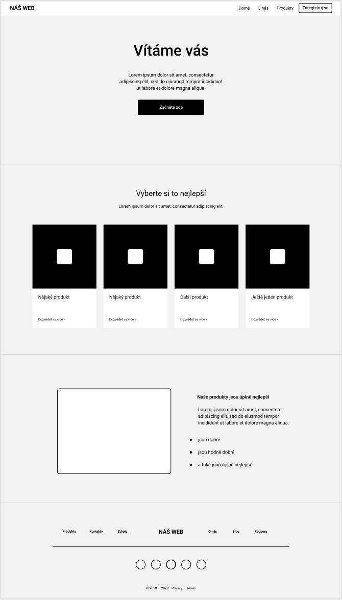

Wireframing
Wireframing je proces, při kterém za pomocí svých sketchů, user flows a sitemapy, které jsme si dříve vytvořili, vytváříme strukturu jednotlivých stránek webu. Wireframy jsou detailnější než sketche a user flows a představují budoucí strukturu stránky. Při jejich tvorbě se nesoustředíme na barvy, typografii a další věci týkající se designu. Soustředíme se pouze na to, jakou budou mít stránky strukturu, layout, co přesně na nich bude, a další podobné věci. Wireframy slouží k popisu uživatelského rozhraní, ale bez designu. Reprezentují jen kostru webové stránky.
Proč wireframy vytvářet
Tvorba wireframů není časově tolik náročná. Pokud zjistíme, že by bylo lepší udělat něco jinak, tak není problém vytvořit nový wireframe. Měli bychom je používat k poučení z vlastních chyb a pokud je to potřeba, tak je vytvářet znovu a znovu. To je jeden z důvodů proč wireframy vytvářet a určitě se najde mnoho dalších. Uvedu tu ale hlavní tři, které jsou podle mě pravděpodobně nejužitečnější.
Společné pochopení celého týmu
Pokud pracujeme v týmu, tak mohou díky wireframům ostatní členové týmu projekt na kterém pracují lépe pochopit.
Testování s uživateli
Vytvořením wireframů můžeme najít různé nedokonalosti, které by uživatelům používání webových stránek nebo aplikace mohli znepříjemňovat.
Získání zpětné vazby od klienta
Vytvořené wireframy můžeme prezentovat svému klientovi a získat tak od něj zpětnou vazbu. Případné změny jsou u wireframů o dost jednodušší než u hotového návrhu. Pokud se ale wireframy rozhodneme klientovi prezentovat, tak mu musíme vysvětlit, že se nejedná o hotový návrh, ale jen o popis uživatelského rozhraní bez designu.
Co při tvorbě wireframu používat
Než si při wireframingu vytvářet vlastní komponenty, je lepší použít nějakou knihovnu komponent určenou pro wireframing, kterou již někdo vytvořil. Naše wireframy tak mohou vypadat lépe a zaberou nám o dost méně času. Pokud používáte Figmu, tak můžete najít různé wireframe kity zde.